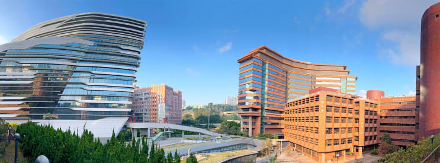

University
The Hong Kong Polytechnic University
I am a PolyU student, major in Electronic and Information Engineering (EIE), minor in Computing (COMP)
PolyU is a public research university located in Hung Hom, Hong Kong near Hung Hom station. The University is one of the eight government-funded degree-granting tertiary institutions in Hong Kong. Founded in 1937 as the first Government Trade School, it is the first institution to provide technical education in Hong Kong. In 1994, the Legislative Council of Hong Kong passed a bill which granted the former Hong Kong Polytechnic official university status.
PolyU consists of 8 faculties and schools, offering programmes covering applied science, business, construction, environment, engineering, social science, health, humanities, design, hotel and tourism management. The university offers over 160 taught programmes for more than 25,800 students every year. It is the largest public tertiary institution in terms of number of students. As of 2020, the university ranks 25th in Asia by THE, 15th in young universities by THE, and 75th internationally by QS.